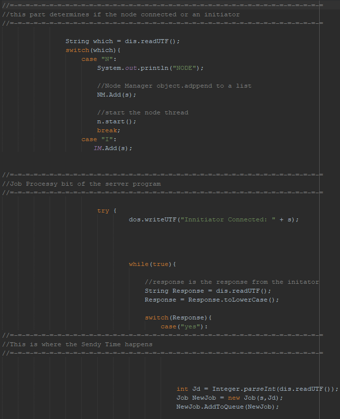
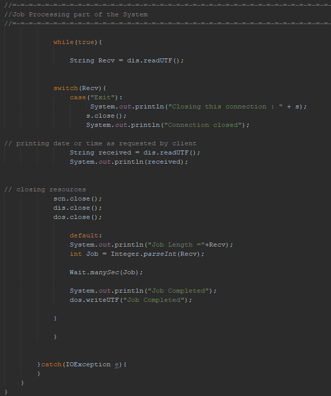

Load Balancer
| About The Program |
|---|
| This system was written as part of my second year at Nottingham Trent University. It was written in Java and the aim of it was to distribute jobs between nodes on a network. The system is written in Java and took just shy of 2 weeks to write and debug. The system consists of 3 main programs, the Load balancer program, the node program, and the initiator program (acting as the client). The system works by allowing nodes to connect then registering them to a list of nodes. This means the program supports a varying number of nodes and the system can scale depending on the planed deployment and network requirements. |
| How it Works |
| The Load Balancer Porgram |
This Section of code works by firstly hosting a server on a given port and IP address, after the server is running, it listens for incoming connections. Once a new connection is received the program distinguishes between a node connection and a client connection. After the type of connection has been established the relevant part of the code runs. If the connection is a node, the server creates a new node object and starts a new thread with the newly created nodes information. Once all this is set up the server replies to the node with an acknowledgement of the connection. The Node is then placed in a ready state where it is prepared to receive any incoming jobs from the load balancer. If the connection is a Client, the server acknowledges the connection much like the node but a new client object is created and the client’s information is stored in this object. This allows the replies from the system to go to the correct client connection. The server-side thread for the client then gets put into the same ready state as the node and is waiting for an incoming job request. Once received, the load balancer uses a round robin approach to determine which node should receive the incoming job. This is done by checking the registered node list and getting the index of the next node. Once the correct node has been selected the job is forwarded and executed on the specified node. |
| The Client Side |
This program is what generates the jobs for the system. When you start the program, it asks for some information regarding what server you wish to connect to. Once the correct information has been entered it asks whether you wish to send a job. If you enter Yes then it asks for the job duration. Once this is done the job request is sent to the server. The server then does its magic and sends a message saying job received and is currently being processed, after a short delay the job completion message is received from the server and the program repeats until the client no longer wishes to send a job. |
| The Node Side |
Similar to the client application, the node first asks for the server information. However once this has been entered, the node becomes completely autonomous and requires no more user input. The nodes are set in a ready state and are purely asked to complete jobs, all the job distribution is handled in the load balancer program. I did it this way because I found it easier to program the server side to handle objects and instances of classes rather than doing it on the node side, the nodes all still use classes but in themselves don’t really need any objects. I was going to add threading to the nodes to allow them to process multiple jobs at the same time but as this was written for a university module, I ran into time constraints and couldn’t complete this function. If I were to revisit however, I would definitely do this because it wouldn’t be overly difficult because of the way I programmed it initially. |
| Source Code Download |
|
Load Balancer.zip
|